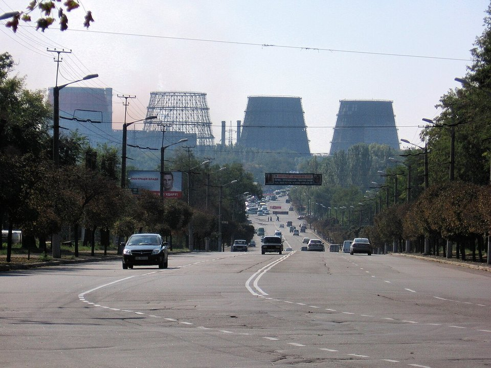
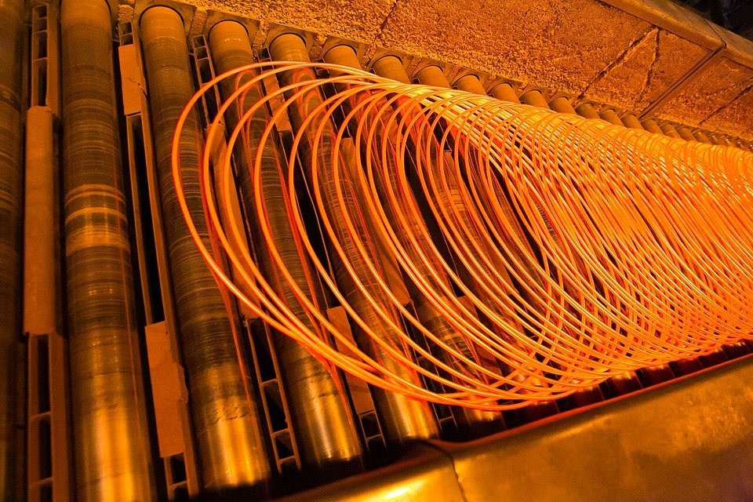
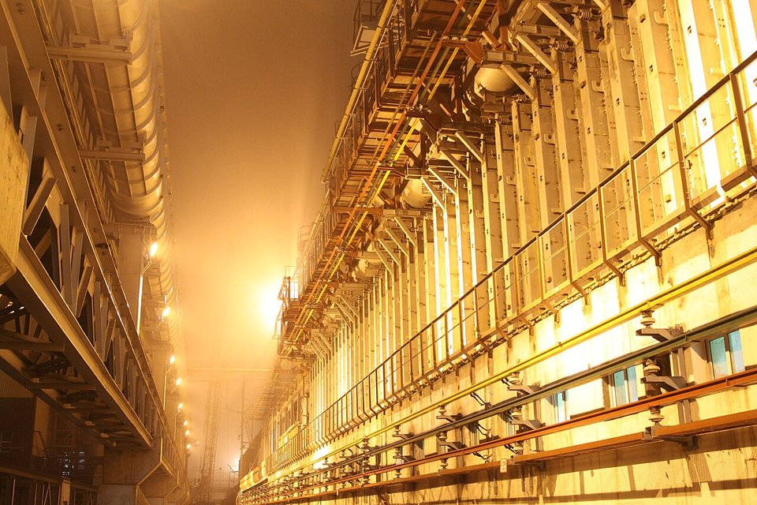

GLOBAL MILLS · UKRAINE · 2026.10
烽火下熄爐：ArcelorMittal 烏克蘭克里維里赫鋼廠無限期停產
鋼鐵潮流工作室 · 發布 2026.10.05

本期重點
ArcelorMittal 9 月 25 日宣布，烏克蘭子公司 ArcelorMittal Kryvyi Rih 在五週內遭俄羅斯飛彈直接擊中四次，「無法安全且可持續地恢復營運」，將無限期停產，並預計認列約 10 億美元非現金減損。這座 2005 年以約 48 億美元買下、曾是烏克蘭最大的一貫作業鋼廠，就此熄爐。
- 四次攻擊、5 死 17 傷。 8 月 16 日首度擊中兩座高爐與電廠，9 月 21 日為五週內第四次。
- 停產但保留設施。 公司將保存基礎設施，等待和平後再評估復產，並與烏克蘭政府討論工廠未來。
- 烏克蘭少掉四分之一鋼產。 2025 年該廠粗鋼 170 萬噸，約占全國 23%，是烏克蘭第二大鋼廠。
- 集團持續收縮高爐資產。 同月宣布德國杜伊斯堡 2027 年停止煉鋼，並退出部分綠鋼投資。
關鍵數字
五週內遭直接擊中4 次最近一次 9 月 21 日
人員傷亡5 死 17 傷其中 1 人傷勢危急
預計減損約 10 億美元非現金，主要為廠房與設備
開戰以來支撐逾 7 億美元集團投入維持營運的資金
2025 年產量粗鋼 170 萬噸軋延鋼材 160 萬噸
占烏克蘭全國約 23%鋼產量；軋材約 24%，全國第二大
從蘇聯鋼鐵重鎮到戰火中熄爐
- 1934克里沃羅格冶金廠首座高爐出鐵
- 19749 號高爐投產，容積 5,000 m³
- 2005Mittal Steel 以約 48 億美元標下
- 2022.02俄羅斯全面入侵，產量大減
- 2026.08.16第一次遭擊中：兩座高爐、電廠受損
- 2026.09.11夜間再遭彈道飛彈擊中
- 2026.09.21五週內第四次攻擊
- 2026.09.25宣布無限期停產
克里維里赫位於烏克蘭中部的「克里夫巴斯」鐵礦帶，是全國鐵礦與鋼鐵重鎮。鋼廠前身是蘇聯時期的「克里沃羅格冶金廠」（Kryvorizhstal），1974 年投產的 9 號高爐容積 5,000 立方公尺，曾是全球最大的高爐之一。2005 年烏克蘭重新私有化時，Mittal Steel 以約 48 億美元標下，是當年烏克蘭最大的外資案。這家子公司從鐵礦開採、選礦到煉鐵、煉鋼、軋延一條龍，是典型的礦鋼一體化鋼廠。
產量：戰爭前後的落差
2022 年全面開戰後，鋼廠受電力中斷、黑海港口受阻與戰火威脅，年產量降到 100 至 170 萬噸。主力產品是鋼筋、線材等長材，外銷歐盟、中東、北非與美國。

公司的決定
- 無限期停產。 公司表示在連續直接命中之後，已無法安全且可持續地恢復營運。
- 保存設施、等待和平。 將維護廠區基礎設施，保留戰後復產的選項，並與烏克蘭政府討論工廠的未來。
- 約 10 億美元減損。 屬非現金減損，主要反映廠房與設備的價值折損，不影響集團現金流。
- 戰爭期間的支撐已到極限。 2022 年以來，集團投入逾 7 億美元維持子公司營運；執行長形容員工在戰爭中展現「非比尋常的韌性」。
為什麼短期內無法復產：工程面

以下為本刊依一貫作業鋼廠工程常識所做的說明，非公司公告內容。
- 高爐不能說停就停。 高爐設計為連續運轉十幾年。被迫緊急停爐時，爐內鐵水與爐料冷卻凝固，在爐缸形成大塊結塊；重新開爐可能須清除結塊、修補或重新內襯耐火材，往往耗時數月、費用以億美元計。
- 焦爐更怕停。 焦爐的矽磚在高溫下維持結構，冷卻收縮後可能崩裂、難以修復，這也是鋼廠在戰火下寧可低負荷「保溫」也不願完全熄爐的原因。
- 電力與副產煤氣環環相扣。 一貫作業鋼廠靠高爐煤氣、焦爐煤氣發電並供應全廠熱能；自備電廠與高爐同時受損，就算修好單一設備也無法啟動整條流程。
- 修了可能再被炸。 在飛彈威脅持續下投入大筆修復資金，面臨再次被毀的風險，經濟上難以成立。
影響
- 烏克蘭：全國約四分之一的鋼產與軋材消失，外匯、稅收與克里維里赫當地就業受到重創；繼 2022 年失去馬立波兩大鋼廠後，烏克蘭鋼鐵業版圖再縮一塊。
- 全球市場：約 150 萬噸年產量相對全球約 18 億噸粗鋼影響有限，但歐洲、中東長材市場少了一個低價供應來源，對當地鋼筋、線材價格略有支撐。
- ArcelorMittal：與杜伊斯堡停產、退出部分綠鋼投資同屬集團收縮傳統高爐資產的一環，重心轉向印度合資廠、巴西與美國等成長或受保護市場。
對台灣鋼鐵業的觀察
- 直接影響小。 烏克蘭不是台灣主要的鋼材或原料來源。
- 地緣風險成本上升。 戰爭可以直接摧毀實體產能，鋼廠評估海外投資、原料長約與供應鏈布局時，戰爭與制裁風險已是必須量化的成本。
- 老高爐的去留。 從杜伊斯堡、Whyalla 到克里維里赫，老高爐在碳成本、市場與地緣風險夾擊下陸續退場，也是檢視台灣高爐資產長期策略的參照。
觀察重點
- ArcelorMittal 第三季財報中減損的實際金額與認列方式。
- 烏克蘭政府對工廠的安排：維持保存、轉手或其他方案。
- 集團旗下鐵礦與選礦部門是否持續運作。
- 停火談判進展與戰後重建對鋼材的需求。
資料來源
- ArcelorMittal Says Kryvyi Rih Operations Cannot Be Safely Restarted（EuropaWire，公司新聞稿，2026-09-25）
- Four missile strikes claimed five lives at ArcelorMittal's Ukrainian plant（StockTitan）
- ArcelorMittal Shuts Plant in Kryvyi Rih Due to Russian Strikes（Kyiv Post）
- ArcelorMittal suspends Kryvyi Rih operations（SMM）
- ArcelorMittal closes Ukraine's largest steel plant after Russian attacks（Ukrinform）
- Missile strike hits ArcelorMittal Kryvyi Rih, partially halting production（SteelOrbis）
- ArcelorMittal unable to restart Kryvyi Rih after missile strikes（SteelOrbis）
- 鋼鐵潮流每日速報 9/21、9/26
內容僅供產業資訊參考，不構成投資建議。新聞版權屬原出處所有。